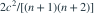

样本来自  。
。 的方差为
的方差为  时，与
时，与  相比哪项正确？
相比哪项正确？
。 的方差为 
。当 时，与 相比哪项正确？- A两者方差相等
- B样本均值的方差更小
- CR 与样本均值都无偏，R 的方差更小
- DR 有偏，样本均值无偏
我已思考，展开答案与解析
正确答案：C
- 。
- 比较两式， 等价于 ，对 成立。
易错提醒支持集依赖参数，不宜机械套用正则 C-R 下界评判效率。
JYSG · 432精选 · 册内北京师范大学432·2025年·3(2)；效率比较；PDF第63页（印刷页61）
原题知识点延伸